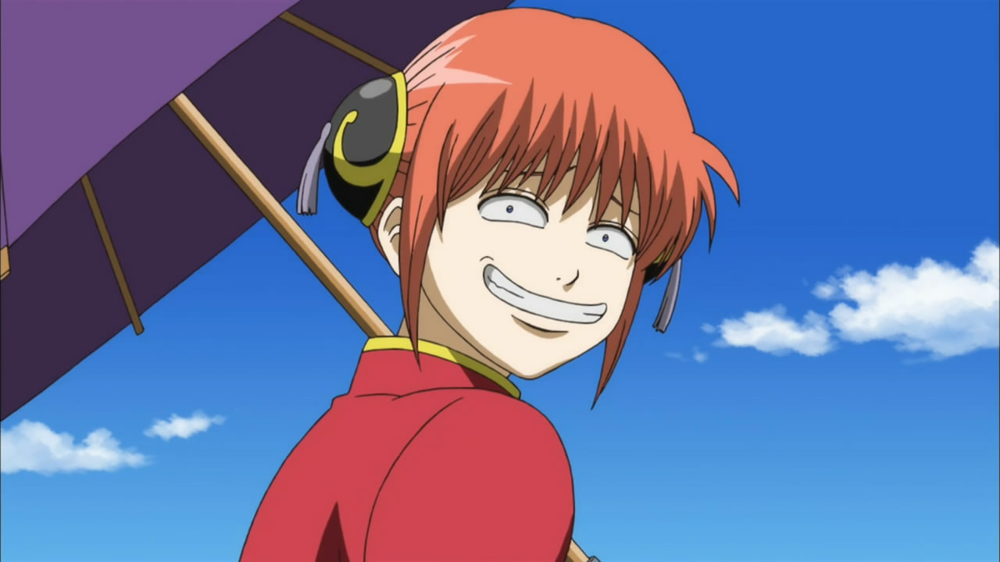

How to be a leader2026.07.14

The confessions arc in Gintama (episodes 283 and 284) is one of the funniest low-stakes arcs. It starts with Gin-chan trying to scrape some extra money by making Tama run a confession booth, a mistaken murder cover-up, false accusation (ending in Gin-chan's arrest) and the Shogun losing his memory. The best part is that the amnesiac Shogun gets taken under Katsura's wing. Katsura, for context, is a Joi rebel (anti-establishment terrorist) bent on destroying the Bakufu, i.e. the government which the Shogun sits on top of.
Katsura doesn't recognize the Shogun (Sho-chan) but somehow clocks that there is an air of nobility surrounding this amnesiac stranger. Katsura then decides that Sho-chan can be a worthy successor and tries to test Sho-chan's leadership values through Jenga, Reversi and Uno. Katsura gets utterly humiliated as his terrible personality is on display since he's a sore winner. Sho-chan, despite losing, takes losses with dignity. This wins over the Joi rebels in the Katsura faction.
Katsura, bitter and disappointed, sets off to rescue Gin-chan, who is imprisoned conveniently in the palace, i.e. Sho-chan's residence LOL. Sho-chan, worried about Katsura, follows and helps break Gin-chan out of his own residence. Granted he had amnesia or did he? As Katsura and Sho-chan escape with Gintoki, they ended up in a room with palace guards and Joi rebels. The Joi rebels pointed their swords at Sho-chan and the palace guards at Katsura. Turns out both Katsura and Sho-chan were clearly aware of the other's identity.
They both had many chances to assassinate the other, but chose instead to observe how their enemy operates and thinks. Both used this situation as an opportunity to learn how to better govern from their enemy. I don't know if politicians in the real world learn from different political parties, maybe they do, maybe they don't, although they all have hidden agendas which have nothing to do with the well-being of their citizens.
Anyway, Sho-can let Katsura and Gin-chan go. However, the room they stormed into was the princess' room. The princess happened to be having a sleepover so she asked everyone to keep quiet since her friend had just fallen asleep. Instead of complying, everyone still continued preaching about leadership. Then, the princess' friend, Kagura, woke up irritated: "Didn't she [the princess] tell you all to shut up? Leader, leader, shut up with the leader crap already!" and she dragged everyone into a void so she could sleep. The princess then chuckled, "Well, it turns out Kagura-chan is the real leader".
DISCLAIMER: All thoughts are my own.